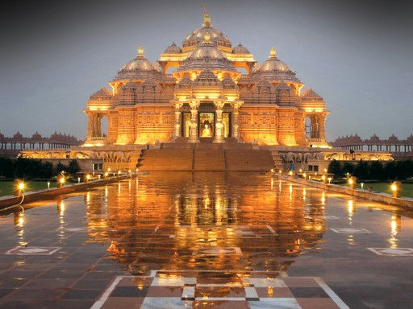

"If there is one place on the face of earth where all the dreams of living men have found a home from the very earliest days when man began the dream of existence, it is India!"
Popular Destinations

Delhi
With old monuments and busy neighbourhoods subtly merging with a vibrant and contemporary cosmopolitan world, Delhi, the capital of India, is a fascinating tourist destination. Poised along the banks of River Yamuna, Delhi, which is almost 1,000 years old, offers a mesmeric mosaic of experiences, both heritage and contemporary
Varanasi
One of the oldest living inhabitations of the world, the sacred city of Varanasi or Benaras, nestled on the banks of the holy Ganges river, has been attracting pilgrims for centuries. Celebrated author Mark Twain, who visited India in the last decade of the 19th century, described the city as “older than history, older than tradition, older even than legend.”

Bengaluru
A city catering to almost all the creature comforts of a metropolitan, a pleasant year-round weather and a bustling shopping and culinary scene, Bengaluru, the capital of Karnataka, is the perfect destination to mix work with pleasure. Once famous as an ideal city for senior citizens looking for a relaxed life after retirement, today it's popular as the information technology hub of India, drawing young technocrats from across the country.
Jaipur
The city of palaces and forts, interspersed with historical monuments and gardens that testify the grandeur of the Rajput kings, Jaipur is the gateway to the royal heritage of India. Also called Pink City, the capital of Rajasthan, remains suspended in time, with its heritage preserved in the overwhelming Hawa Mahal that gazes down at the bustling streets of Johari Bazaar.


Kochi
A vibrant potpourri of art, culture, food, carnivals and festivals, Kochi, sprawled along a gorgeous estuary in Kerala, is a fascinating tourist destination. Skirted by the emerald-blue Arabian Sea that laps at its golden sun-kissed beaches, the city remains suspended in time, with its colonial charm merging seamlessly with its artistic aesthetic.